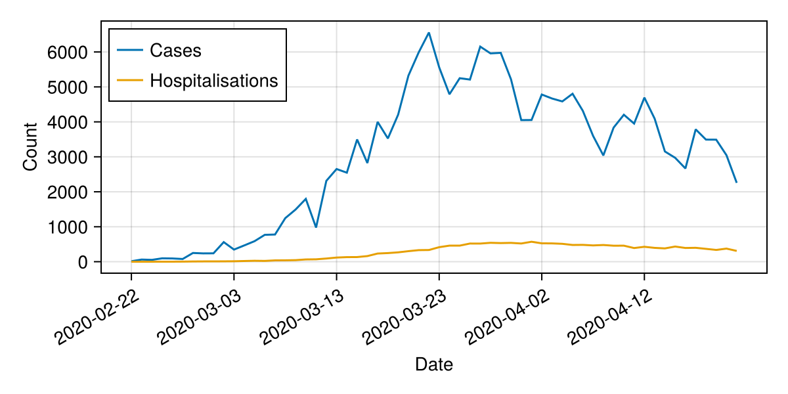
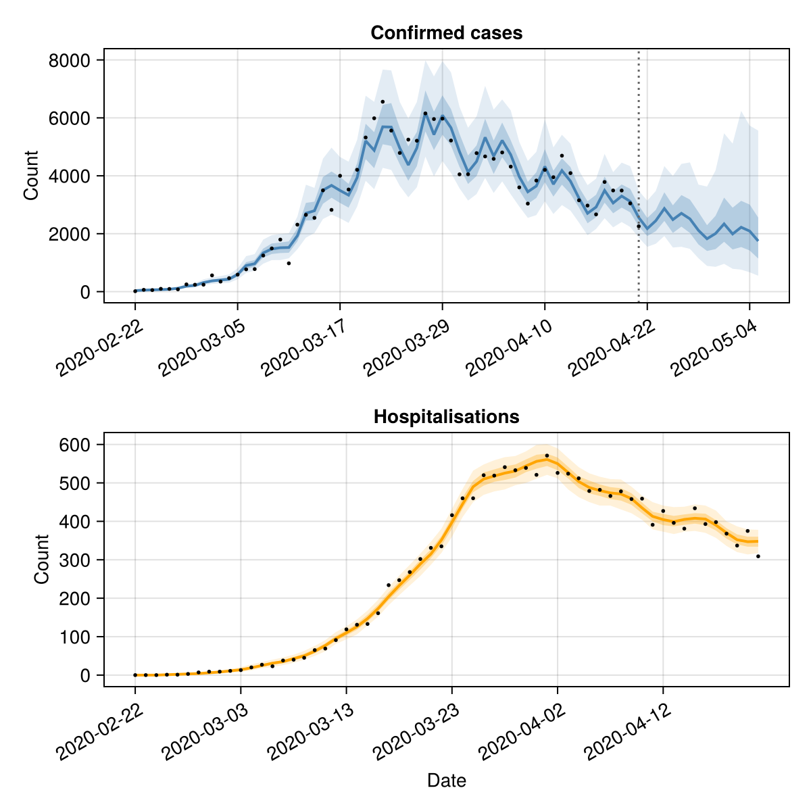

Forecasting multiple data streams
This tutorial demonstrates how to use EpiNow2.jl to forecast multiple epidemiological outcomes — for example, cases and hospitalisations — by combining estimate_infections() with estimate_secondary().
Setup
using EpiNow2
using CSV, DataFrames, Dates, Distributions, Statistics, Random
using CairoMakie
Random.seed!(6789)Data
We use the example case data and simulate a hospitalisation time series, assuming 10% of cases are hospitalised with a log-normal delay (mean ~7 days).
pkgdir = dirname(dirname(pathof(EpiNow2)))
cases_df = CSV.read(
joinpath(pkgdir, "test", "reference", "example_confirmed_full.csv"),
DataFrame
)
cases_df.date = Date.(cases_df.date)
cases_df = first(cases_df, 60)
# Simulate hospitalisations: 10% of cases with a lognormal delay
primary = DataFrame(date=cases_df.date, primary=cases_df.confirm)
hosp = simulate_secondary(
primary;
delays = delay_opts(LogNormal(1.6, 0.5)),
frac = 0.1
)
df = DataFrame(
date = cases_df.date,
cases = cases_df.confirm,
hospitalisations = hosp.secondary
)
first(df, 6)| Row | date | cases | hospitalisations |
|---|---|---|---|
| Date | Int64 | Int64 | |
| 1 | 2020-02-22 | 14 | 0 |
| 2 | 2020-02-23 | 62 | 0 |
| 3 | 2020-02-24 | 53 | 0 |
| 4 | 2020-02-25 | 97 | 1 |
| 5 | 2020-02-26 | 93 | 1 |
| 6 | 2020-02-27 | 78 | 3 |
fig = Figure(size=(600, 300))
ax = Axis(fig[1, 1]; xlabel="Date", ylabel="Count")
date_nums = Dates.value.(df.date .- df.date[1])
lines!(ax, date_nums, Float64.(df.cases); label="Cases")
lines!(ax, date_nums, Float64.(df.hospitalisations); label="Hospitalisations")
tick_step = max(1, nrow(df) ÷ 6)
ax.xticks = (date_nums[1:tick_step:end], string.(df.date[1:tick_step:end]))
ax.xticklabelrotation = π/6
axislegend(ax; position=:lt)
fig
Estimating infections
We first estimate infections and forecast cases using estimate_infections(). We use the confirmed cases and specify the generation time, incubation period, and reporting delay.
generation_time = UncertainDistribution(
(shape, rate) -> Gamma(max(1e-6, shape), max(1e-6, 1 / rate)),
[truncated(Normal(1.4, 0.48); lower=0.01),
truncated(Normal(0.38, 0.25); lower=0.01)],
14.0
)
incubation_period = UncertainDistribution(
(μ, σ) -> LogNormal(μ, σ),
[Normal(1.62, 0.064), truncated(Normal(0.418, 0.069); lower=0.01)],
14.0
)
reporting_delay = LogNormal(0.5, 0.5)
delay = incubation_period + reporting_delay
est = estimate_infections(
rename(df[!, [:date, :cases]], :cases => :confirm);
generation_time = gt_opts(generation_time),
delays = delay_opts(discretise(delay)),
forecast = forecast_opts(horizon=14),
inference = inference_opts(samples=500, warmup=250, chains=1),
verbose=false
)
estEpiNow2 estimate_infections result
Data: 60 days (2020-02-22 to 2020-04-21)
Forecast: 14 days
Timing: 235.4s
Latest Rt: 0.95 (90% CrI: 0.78-1.08)
Latest infections: 1607.05 (90% CrI: 208.55-7847.35)
Latest reports: 1747.0 (90% CrI: 549.4-5560.35)
Estimating the secondary relationship
We use estimate_secondary() to learn the delay and scaling between cases and hospitalisations.
sec_data = DataFrame(
date = df.date,
primary = df.cases,
secondary = df.hospitalisations
)
sec = estimate_secondary(
sec_data;
delays = delay_opts(LogNormal(1.6, 0.5)),
obs = obs_opts(week_effect=false),
inference = inference_opts(samples=500, warmup=250, chains=1),
burn_in=14,
verbose=false
)
secEpiNow2.EstimateSecondaryResult(EpiNow2.EpiNow2Fit{EpiNow2.SecondaryMetadata, @NamedTuple{expected::Vector{Float64}}}(FlexiChains.VNChain{FlexiChains.FlexiChainMetadata{DimensionalData.Dimensions.Lookups.Sampled{Int64, UnitRange{Int64}, DimensionalData.Dimensions.Lookups.ForwardOrdered, DimensionalData.Dimensions.Lookups.Regular{Int64}, DimensionalData.Dimensions.Lookups.Points, DimensionalData.Dimensions.Lookups.NoMetadata}, DimensionalData.Dimensions.Lookups.Sampled{Int64, UnitRange{Int64}, DimensionalData.Dimensions.Lookups.ForwardOrdered, DimensionalData.Dimensions.Lookups.Regular{Int64}, DimensionalData.Dimensions.Lookups.Points, DimensionalData.Dimensions.Lookups.NoMetadata}, Vector{Float64}, Vector{Missing}}}(OrderedCollections.OrderedDict{Union{FlexiChains.Parameter{var"#s22"}, FlexiChains.Extra} where var"#s22"<:AbstractPPL.VarName, Matrix}(Parameter(frac) => [0.09953713349972121; 0.0992507139981925; … ; 0.10099482443015202; 0.10110237638157112;;], Parameter(overdispersion) => [0.00496398054759376; 0.007589742085992658; … ; 0.01831826545490762; 0.021623048382829288;;], Extra(:n_steps) => [15; 5; … ; 7; 3;;], Extra(:is_accept) => Bool[1; 1; … ; 1; 1;;], Extra(:acceptance_rate) => [0.9927172211878353; 0.9598862367537858; … ; 0.9943710329698467; 0.988180359694109;;], Extra(:log_density) => [-201.07468973251667; -201.17721593264108; … ; -200.10207143494142; -200.32985731037218;;], Extra(:hamiltonian_energy) => [203.1471654269507; 202.35283087762215; … ; 200.19971812896668; 200.3991841840953;;], Extra(:hamiltonian_energy_error) => [0.0038108520858202155; 0.0026537365068008967; … ; 0.0022302974459478264; 0.023491491652805507;;], Extra(:max_hamiltonian_energy_error) => [0.0487611620508801; 0.22054517722679634; … ; 0.01093868244947771; 0.023491491652805507;;], Extra(:tree_depth) => [3; 2; … ; 3; 2;;]…), FlexiChains.FlexiChainMetadata{DimensionalData.Dimensions.Lookups.Sampled{Int64, UnitRange{Int64}, DimensionalData.Dimensions.Lookups.ForwardOrdered, DimensionalData.Dimensions.Lookups.Regular{Int64}, DimensionalData.Dimensions.Lookups.Points, DimensionalData.Dimensions.Lookups.NoMetadata}, DimensionalData.Dimensions.Lookups.Sampled{Int64, UnitRange{Int64}, DimensionalData.Dimensions.Lookups.ForwardOrdered, DimensionalData.Dimensions.Lookups.Regular{Int64}, DimensionalData.Dimensions.Lookups.Points, DimensionalData.Dimensions.Lookups.NoMetadata}, Vector{Float64}, Vector{Missing}}([251, 252, 253, 254, 255, 256, 257, 258, 259, 260 … 741, 742, 743, 744, 745, 746, 747, 748, 749, 750], [1], [3.019266128540039], [missing]), [VarNamedTuple(); VarNamedTuple(); … ; VarNamedTuple(); VarNamedTuple();;]), [(expected = [0.00011550114070010587, 0.016564932085956528, 0.1799441295162694, 0.7580756202412648, 1.729681805020674, 3.000574996918075, 4.40448040227108, 5.781288364761106, 7.900582423401494, 10.96866930977777 … 399.06307687145807, 396.43815319699286, 400.72353105352533, 406.19583514348454, 402.36890764023826, 386.92269458350285, 365.82951101436726, 350.503501655555, 344.83470800729486, 343.48736402579397],), (expected = [0.00011517166205740532, 0.01651726913842521, 0.1794263406303788, 0.7558942498600124, 1.7247046241781174, 2.9919408030420813, 4.391806450846755, 5.764652629061386, 7.877848389242434, 10.937106812453807 … 397.91476725824276, 395.29739683856775, 399.5704434600486, 405.02700091802717, 401.2110854524931, 385.8093190910628, 364.77683145430046, 349.4949229029621, 343.8424412881504, 342.4989743079051],), (expected = [0.00011540384960512094, 0.016550857788704593, 0.1797912326630275, 0.7574314877074525, 1.728212103160361, 2.9980254229316627, 4.400737936289819, 5.776376031358127, 7.893869335540529, 10.959349282537346 … 398.7239948030856, 396.1013015142477, 400.383038104837, 405.8506924030672, 402.0270166225981, 386.5939281423731, 365.51866735473675, 350.2056804359033, 344.5417035356502, 343.19550438616125],), (expected = [0.00011531838862617133, 0.016538494856399594, 0.17965692731104857, 0.7568656785044477, 1.72692110977843, 2.9957858645340836, 4.39745053566499, 5.77206101340494, 7.887972525966526, 10.951162524520829 … 398.4261434374303, 395.80540933035724, 400.08394741493555, 405.5475173131171, 401.72669786201544, 386.30513807469976, 365.2456207469622, 349.94407280380335, 344.28432695881924, 342.93913343543085],), (expected = [0.00011519568421685507, 0.016520744225356664, 0.17946409241627978, 0.7560532927244843, 1.725067508493866, 2.9925703187530512, 4.392730503706383, 5.765865534068723, 7.87950591881409, 10.939408021834584 … 397.99849006467497, 395.38056894013636, 399.6545146271597, 405.1122201659398, 401.2955018170272, 385.890494864362, 364.85358191082196, 349.56845798679575, 343.91478706798176, 342.5710374170858],), (expected = [0.00011599707327296382, 0.01663667454551462, 0.1807235074215328, 0.7613590276775212, 1.737173477563078, 3.0135712201281097, 4.423557284725807, 5.806328540777749, 7.934801782688433, 11.016177307186645 … 400.791517101306, 398.1552242374732, 402.4591631184029, 407.95516910189957, 404.11166623537554, 388.5985518348168, 367.4140085051301, 352.0216184342437, 346.32827184789244, 344.97509218857033],), (expected = [0.0001145436713657744, 0.01642642292411516, 0.17843942810122662, 0.7517365287913635, 1.715218051045273, 2.9754839142452294, 4.36764973023075, 5.732944694725409, 7.834517016628751, 10.876948271185046 … 395.72607380515973, 393.12309998995255, 397.37264311279966, 402.79918728, 399.00426090535944, 383.6872105385585, 362.7704101592093, 347.57255833567575, 341.9511676743876, 340.6150903102949],), (expected = [0.00011588692957437256, 0.016620740968503887, 0.1805504121868493, 0.760629802256962, 1.7355096212898353, 3.010684835626641, 4.419320421679999, 5.800767265413326, 7.927201864873868, 11.00562606124383 … 400.4076407234906, 397.7738728895417, 402.0736894764567, 407.5644314092324, 403.72460983310305, 388.2263538263113, 367.06210096045015, 351.684453654091, 345.9965601304354, 344.64467654072894],), (expected = [0.00011550971703508025, 0.01656617275333498, 0.1799576075702489, 0.758132401351383, 1.729811361127206, 3.0007997451394077, 4.404810305453796, 5.781721393259512, 7.90117419071809, 10.969490882148772 … 399.09296739126984, 396.4678471054472, 400.7535459442488, 406.226259919321, 402.3990457725356, 386.9516757675248, 365.85691228218184, 350.52975497856056, 344.86053672777746, 343.51309182786457],), (expected = [0.00011572412411154754, 0.01659718925004093, 0.18029455688004667, 0.759551920511421, 1.7330502441842526, 3.0064184166606633, 4.4130578350960965, 5.792547040187715, 7.915968284078437, 10.990030067091903 … 399.84022586311124, 397.21019032310363, 401.50391367006455, 406.98687471092376, 403.15249451904236, 387.6762009822332, 366.5419398307989, 351.186084080678, 345.50625083107667, 344.15628298613166],) … (expected = [0.0001156247821542811, 0.016582818271521537, 0.18013843701457202, 0.7588942098889039, 1.7315495615223482, 3.0038150985456302, 4.4092364792398495, 5.787531156513338, 7.909113686671417, 10.980513576934365 … 399.49399606323817, 396.86623792460745, 401.1562432490117, 406.63445648215725, 402.80339655823246, 387.34050425942013, 366.2245436954552, 350.88198489379687, 345.2070699275672, 343.85827104729304],), (expected = [0.0001166858178697691, 0.016736309524313056, 0.1818058971464628, 0.7659189804908637, 1.747577813287348, 3.0316202030033503, 4.450051006722862, 5.841104005988936, 7.982325176199768, 11.08215578553469 … 403.19195202807083, 400.5398697844401, 404.86958597052063, 410.39850883022496, 406.5319863184457, 390.92596021658096, 369.61453765998147, 354.1299589342751, 348.40251355229833, 347.041229380815],), (expected = [0.00011718817397425868, 0.01680898122301277, 0.1825953698890114, 0.7692449160300935, 1.7551665211893626, 3.0447847588768373, 4.469374981150547, 5.866468513117321, 8.016987759321607, 11.130279126925414 … 404.94277975794904, 402.27918106632785, 406.627698687164, 412.18063043750806, 408.2973178712285, 392.6235238906086, 371.2195582426103, 355.6677390133442, 349.915422673079, 348.5482272375696],), (expected = [0.00011685769478895922, 0.016761173535267022, 0.18207600861034495, 0.7670569213833877, 1.7501742259180995, 3.036124345156336, 4.456662542168447, 5.8497822589315005, 7.994184687699497, 11.098620782347611 … 403.7909830213337, 401.1349605218111, 405.4711094607799, 411.0082467606384, 407.1359796728206, 391.50676736078265, 370.1636819632227, 354.6560974643341, 348.92014269300245, 347.5568360322127],), (expected = [0.0001168560861357853, 0.016760940824730168, 0.18207348054743966, 0.7670462710166188, 1.7501499252299157, 3.0360821893939205, 4.4566006626122565, 5.849701036279816, 7.9940736905923515, 11.098466680973754 … 403.78537649130567, 401.1293908699466, 405.4654796026445, 411.0025400208292, 407.13032669840675, 391.50133139381086, 370.1585423392958, 354.65117315907986, 348.91529802994904, 347.55201029830863],), (expected = [0.00011681077297510482, 0.016754385744915924, 0.18200226910018888, 0.7667462673933819, 1.7494654141083268, 3.034894729681077, 4.4548576154980655, 5.847413125419736, 7.9909470814309165, 11.094125894266016 … 403.6274495993284, 400.9725027762512, 405.30689559557925, 410.8417903812383, 406.9710915431242, 391.34820898753543, 370.01376743777445, 354.51246343665105, 348.7788316996465, 347.41607717155256],), (expected = [0.000115867421753248, 0.016617918933524354, 0.1805197548644704, 0.7605006473507286, 1.735214931616522, 3.0101736209745864, 4.418570020454291, 5.799782294267259, 7.925855824753696, 11.003757304146275 … 400.339651434878, 397.70633081517707, 402.005417292469, 407.49522689628554, 403.6560573225445, 388.16043292238584, 366.99977375043466, 351.62473757132955, 345.93780985300833, 344.5861558133765],), (expected = [0.00011659045782898687, 0.0167225145766857, 0.18165603502225833, 0.7652876328356338, 1.7461372823799834, 3.0291212334999327, 4.446382821996868, 5.836289173616905, 7.975745331124581, 11.073020744163474 … 402.85960013221114, 400.2097040050426, 404.53585119779564, 410.0602165558193, 406.1968812259364, 390.60371920121554, 369.30986369096235, 353.8380489330957, 348.115324695294, 346.7551626329551],), (expected = [0.00011717797494732673, 0.016807505814222856, 0.18257934170961568, 0.7691773916070092, 1.7550124523215223, 3.044517486997983, 4.468982658386159, 5.865953553133745, 8.016284026221458, 11.129302108331407 … 404.90723377968646, 402.24386889942394, 406.5920048062969, 412.1444491189051, 408.26147743077274, 392.589059299703, 371.18697249715535, 355.6365184104658, 349.8847070099657, 348.51763158721315],), (expected = [0.00011730169582102502, 0.016825403488752763, 0.18277377401888031, 0.7699965070653467, 1.7568814085529436, 3.0477596698638063, 4.473741790360768, 5.87220035486424, 8.024820769440357, 11.141153983503086 … 405.33842976695485, 402.6722286018447, 407.02499494898484, 412.5833522004426, 408.69624543722364, 393.00713735037704, 371.5822589224858, 356.01524476262483, 350.25730811220427, 348.88877685614267],)], EpiNow2.SecondaryMetadata([Dates.Date("2020-02-22"), Dates.Date("2020-02-23"), Dates.Date("2020-02-24"), Dates.Date("2020-02-25"), Dates.Date("2020-02-26"), Dates.Date("2020-02-27"), Dates.Date("2020-02-28"), Dates.Date("2020-02-29"), Dates.Date("2020-03-01"), Dates.Date("2020-03-02") … Dates.Date("2020-04-12"), Dates.Date("2020-04-13"), Dates.Date("2020-04-14"), Dates.Date("2020-04-15"), Dates.Date("2020-04-16"), Dates.Date("2020-04-17"), Dates.Date("2020-04-18"), Dates.Date("2020-04-19"), Dates.Date("2020-04-20"), Dates.Date("2020-04-21")], 14)), EpiNow2.EstimateSecondaryArgs(EpiNow2.SecondaryOpts(incidence, false, true, true, false, false), EpiNow2.DelayOpts(LogNormal(1.6, 0.5), true), EpiNow2.ObsOpts{Float64}(negbin, Normal(0.0, 0.25), 1.0, false, 7, 1.0, true), EpiNow2.InferenceOpts(nuts, 500, 250, 1, nothing, 0.9, 12, true, AutoForwardDiff()), 14, [0.2, 0.5, 0.9]), EpiNow2.SecondaryData([Dates.Date("2020-02-22"), Dates.Date("2020-02-23"), Dates.Date("2020-02-24"), Dates.Date("2020-02-25"), Dates.Date("2020-02-26"), Dates.Date("2020-02-27"), Dates.Date("2020-02-28"), Dates.Date("2020-02-29"), Dates.Date("2020-03-01"), Dates.Date("2020-03-02") … Dates.Date("2020-04-12"), Dates.Date("2020-04-13"), Dates.Date("2020-04-14"), Dates.Date("2020-04-15"), Dates.Date("2020-04-16"), Dates.Date("2020-04-17"), Dates.Date("2020-04-18"), Dates.Date("2020-04-19"), Dates.Date("2020-04-20"), Dates.Date("2020-04-21")], [14, 62, 53, 97, 93, 78, 250, 238, 240, 561 … 4694, 4092, 3153, 2972, 2667, 3786, 3493, 3491, 3047, 2256], [0, 0, 0, 1, 1, 3, 7, 9, 9, 11 … 427, 396, 381, 434, 393, 398, 368, 337, 375, 309]), 60×10 DataFrame
Row │ date mean median sd lower_20 upper_20 lower_50 ⋯
│ Date Float64 Float64 Float64 Float64 Float64 Float64 ⋯
─────┼──────────────────────────────────────────────────────────────────────────
1 │ 2020-02-22 0.0 0.0 0.0 0.0 0.0 0.0 ⋯
2 │ 2020-02-23 0.01 0.0 0.0995984 0.0 0.0 0.0
3 │ 2020-02-24 0.236 0.0 0.482462 0.0 0.0 0.0
4 │ 2020-02-25 0.764 1.0 0.87512 0.0 1.0 0.0
5 │ 2020-02-26 1.712 2.0 1.26501 1.0 2.0 1.0 ⋯
6 │ 2020-02-27 3.048 3.0 1.76293 2.0 3.0 2.0
7 │ 2020-02-28 4.37 4.0 2.06534 4.0 5.0 3.0
8 │ 2020-02-29 5.754 6.0 2.38765 5.0 6.0 4.0
⋮ │ ⋮ ⋮ ⋮ ⋮ ⋮ ⋮ ⋮ ⋱
54 │ 2020-04-15 407.962 408.0 20.7664 401.6 413.0 394.0 ⋯
55 │ 2020-04-16 405.306 406.0 21.9015 400.0 412.0 390.0
56 │ 2020-04-17 390.476 390.0 21.0373 384.0 395.0 376.0
57 │ 2020-04-18 368.622 370.0 20.4929 365.0 373.4 355.0
58 │ 2020-04-19 353.384 352.0 20.1607 348.0 358.0 340.0 ⋯
59 │ 2020-04-20 347.164 347.0 20.3049 341.6 351.0 334.0
60 │ 2020-04-21 347.496 348.0 18.9858 343.0 353.0 334.0
3 columns and 45 rows omitted, 60×10 DataFrame
Row │ date mean median sd lower_20 u ⋯
│ Date Float64 Float64 Float64 Float64 F ⋯
─────┼──────────────────────────────────────────────────────────────────────────
1 │ 2020-02-22 0.000116467 0.000116513 9.03598e-7 0.000116253 ⋯
2 │ 2020-02-23 0.0167046 0.0167113 0.000130716 0.0166738
3 │ 2020-02-24 0.181461 0.181534 0.00142004 0.181126
4 │ 2020-02-25 0.764468 0.764773 0.00598243 0.763056
5 │ 2020-02-26 1.74427 1.74496 0.01365 1.74105 ⋯
6 │ 2020-02-27 3.02588 3.02708 0.0236793 3.02029
7 │ 2020-02-28 4.44162 4.44339 0.0347584 4.43342
8 │ 2020-02-29 5.83004 5.83236 0.0456236 5.81927
⋮ │ ⋮ ⋮ ⋮ ⋮ ⋮ ⋱
54 │ 2020-04-15 409.621 409.784 3.20554 408.864 4 ⋯
55 │ 2020-04-16 405.762 405.924 3.17534 405.012 4
56 │ 2020-04-17 390.185 390.341 3.05344 389.465 3
57 │ 2020-04-18 368.914 369.061 2.88698 368.233 3
58 │ 2020-04-19 353.459 353.6 2.76604 352.806 3 ⋯
59 │ 2020-04-20 347.742 347.881 2.7213 347.1 3
60 │ 2020-04-21 346.384 346.522 2.71067 345.744 3
5 columns and 45 rows omitted, 5.168368101119995)Visualising results
We combine the case forecast from estimate_infections() with the fitted secondary relationship to show both data streams.
fig = Figure(size=(600, 600))
# Cases panel
ax1 = Axis(fig[1, 1]; title="Confirmed cases", ylabel="Count",
xticklabelrotation=π/6)
date_nums_r = Dates.value.(est.reports.date .- est.reports.date[1])
band!(ax1, date_nums_r, est.reports.lower_90, est.reports.upper_90;
color=(:steelblue, 0.15))
band!(ax1, date_nums_r, est.reports.lower_50, est.reports.upper_50;
color=(:steelblue, 0.3))
lines!(ax1, date_nums_r, est.reports.median; color=:steelblue, linewidth=2)
obs_nums = Dates.value.(df.date .- est.reports.date[1])
scatter!(ax1, obs_nums, Float64.(df.cases); color=:black, markersize=4)
fd = Dates.value(df.date[end] - est.reports.date[1])
vlines!(ax1, [fd]; color=:grey40, linestyle=:dot)
tick_idx = 1:max(1, length(date_nums_r) ÷ 6):length(date_nums_r)
ax1.xticks = (date_nums_r[tick_idx], string.(est.reports.date[tick_idx]))
# Hospitalisations panel
ax2 = Axis(fig[2, 1]; title="Hospitalisations", xlabel="Date", ylabel="Count",
xticklabelrotation=π/6)
date_nums_s = Dates.value.(sec.predictions.date .- sec.predictions.date[1])
band!(ax2, date_nums_s, sec.predictions.lower_90, sec.predictions.upper_90;
color=(:orange, 0.15))
band!(ax2, date_nums_s, sec.predictions.lower_50, sec.predictions.upper_50;
color=(:orange, 0.3))
lines!(ax2, date_nums_s, sec.predictions.median; color=:orange, linewidth=2)
obs_nums_s = Dates.value.(df.date .- sec.predictions.date[1])
scatter!(ax2, obs_nums_s, Float64.(df.hospitalisations); color=:black, markersize=4)
tick_idx2 = 1:max(1, length(date_nums_s) ÷ 6):length(date_nums_s)
ax2.xticks = (date_nums_s[tick_idx2], string.(sec.predictions.date[tick_idx2]))
fig
Fitted parameters
The fraction of cases that become hospitalisations and the delay parameters:
params = get_parameters(sec)
param_summary = DataFrame(
parameter = Symbol[], median = Float64[],
lower_90 = Float64[], upper_90 = Float64[]
)
for (k, v) in sort(collect(params), by=first)
any(ismissing, v) && continue
push!(param_summary, (
parameter=k, median=round(median(v), digits=4),
lower_90=round(quantile(v, 0.05), digits=4),
upper_90=round(quantile(v, 0.95), digits=4)
))
end
param_summary| Row | parameter | median | lower_90 | upper_90 |
|---|---|---|---|---|
| Symbol | Float64 | Float64 | Float64 | |
| 1 | frac | 0.1004 | 0.0991 | 0.1017 |
| 2 | overdispersion | 0.0105 | 0.0013 | 0.027 |